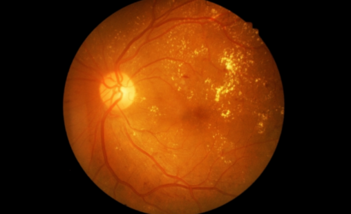

Forest fires are a common and frightening disaster that causes harm to the environment and
requires significant financial resources to control.
A Data Science project using k-means clustering can identify fire hotspots and severity,
allowing for better resource allocation and faster response times.
Using meteorological data can further improve accuracy, identifying the seasons and weather
conditions that increase the likelihood and severity of these fires.
Fake news is a prevalent problem in our interconnected world, and it's crucial to combat its
spread by verifying information's validity.
A project using Python with TfidfVectorizer and PassiveAggressiveClassifier can help distinguish
between true and false news.
Appropriate Python packages for this project include Pandas, NumPy, and scikit-learn, and the
dataset used can be News.csv.
This project idea involves creating a live lane-line detection system using Python for beginners
in data science.
The system uses lines painted on the road to provide lane detection instructions and guidance
for human drivers.
This project has practical applications in the development of self-driving cars.
sentimental analysis, which involves evaluating language to determine whether the sentiment
expressed is positive or negative. The project discussed in the article uses the R programming
language and datasets from the Janeausten package, as well as general-purpose lexicons like
AFINN, bing, and Loughran to create a word cloud displaying the results.
Speech emotion recognition is a popular data science project that can be developed using various
libraries like 'librosa' to detect human emotion based on affective states expressed through
voice tone and pitch. While feasible, the project is difficult due to the subjectivity of human
emotions and the difficulty of annotating human audio.

Diabetic Retinopathy is the leading cause of blindness in diabetics. It is possible to create an
automated diabetic retinopathy screening system. A neural network can be trained on retina
photographs of both damaged and healthy people. The purpose of this study is to determine
whether the patient has retinopathy.
Chatbots automate customer interactions, making business operations efficient.
They can be domain-specific or open-domain.Domain-specific chatbots require customization, while open-domain chatbots require vast amounts of data. Chatbots analyze customer input and provide pre-programmed responses.
Recurrent Neural Networks can be trained using the intentions JSON dataset to create chatbots, which can be implemented in Python.
Use Python and OpenCV to develop a system that can determine a person's age and gender by analysing a photograph using Convolutional Neural Networks.
The Adience dataset can be used for this project, but note that cosmetics, lighting, and facial expressions can make this challenging.
Credit card fraud is increasing, but credit card companies are using advanced technology like AI, Machine Learning, and Data Science to identify and prevent it.
By analyzing customers' spending behavior and location, fraudulent activity can be distinguished from non-fraudulent activity.
Decision trees, Artificial Neural Networks, and Logistic Regression can be used to improve accuracy as more data is fed into the system, and R or Python can be used for this project.
Developing a breast cancer detection system in Python using the IDC dataset with Convolutional Neural Networks and libraries like NumPy, OpenCV, TensorFlow, Keras, scikit-learn, and Matplotlib can help detect breast cancer early and take countermeasures.

A model using CNN techniques aims to improve self-driving car accuracy by recognizing traffic signs and rules. A program called 'Traffic signs recognition' uses CNN to identify signals from image inputs. The 'German Traffic signs recognition benchmark' is a dataset used to develop a Deep Neural Network for recognizing traffic signs, and a graphical user interface (GUI) can be created for application interaction.
Businesses use customer segmentation to provide personalized services and increase revenue. 'K-means clustering' is a method used to categorize customers based on age, gender, annual income, and average scores.
The Mall Customers dataset can be used as an example.